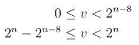

| ADC Home > Reference Library > Technical Notes > Apple Applications > Final Cut Pro/Final Cut Express > | |
|
BackgroundSince the release of Final Cut 3.0, rendering operations can go though either an 8-bit RGB path or an 8-bit Y’CbCr ( However, high-end users capturing and outputting 10-bit media, or even 8-bit users applying multiple effects/compositing require higher quality processing. Apple has defined a 32-bit per component floating point rendering format called Supporting a 10-bit render path allows you to:
Note: QuickTime has documented a greater than 8 bit on-disk storage format called 'v210' discussed in the Uncompressed Y'CbCr Video in QuickTime Files Ice Floe document. Format DescriptionIn order to send 10-bit YUV data through the Final Cut Pro image processing path, an Image Codec must accept and provide pixel data in the Final Cut Pro 32-bit per component rendering pixel format defined by the Four Character Code
IMPORTANT: While this technical note refers to the chroma channels as "Cb/Cr", be aware that this is simply for convenience. The ranges differ from true "Cb/Cr" as well as "Pb/Pr". For example:
Table 1 : Component Range
Note: As shown above, Table 2: Pixel Layout
Additional DetailsCodec Pixel Format Resource - 'cpix'Both the Image Decompressor ('imdc') and Image Compressor ('imco') will need to supply a A codec advertising support for Listing 1: Codec Pixel Format and Component Public Resource Map resource 'cpix' (kMyCPIXResID) {
{
'2vuy','r408','r4fl'
}
};
resource 'thnr' (kMyTHNRResID) {
{
'cdci', 1, 0,
'cdci', kMyCDCIResID, 0,
'cpix', 1, 0,
'cpix', kMyCPIXResID, 0,
}
};
Decompressors Generating 'rf4l'Image Decompressors are expected to convert subsampled (eg. 4:2:2) material into the appropriate 4:4:4:4 format. It is the implementor's decision as to what approach is used to synthesize the missing chroma value. If the on-disk format does not include alpha, the Image Decompressor should fill the entire alpha channel with 1.0 (opaque). Compressors Receiving 'r4fl'Image Compressors are expected to convert the fully sampled 4:4:4:4 material into the appropriate subsampled format (eg. 4:2:2) as needed. It is the implementor's decision what filtering (if any) is used during the conversion. The values supplied in the pixel buffer may include illegal undershoot/overshoot. It is the compressor's responsibility to clamp these values into the minimum/maximum legal SDI signal (but continue to allow values outside of CCIR recommendations). For example, when converting an fp Y-value to 10-bit, the math would normally look like a multiplication. However, Yint is constrained by the illegal CCIR values shown in Figure 1. Figure 1:  In other words, for n = 10-bits, the values 0, 1, 2, 3 and 1020, 1021, 1022, 1023 are illegal (reserved) synchronization values. Values of “>=4” and “<= 1019” may include values outside of CCIR recommendations, but should be preserved in the data, to allow preservation of superblack/superwhite material and so on. It is the implementor's (hardware or compressor) responsibility to prevent these illegal values from being sent out in a digital stream. It is probably simplest for the Image Compressor to clamp these values. Color InformationIt is expected that Image Codecs outputting Final Cut Pro assumes the following for
ReferencesDocument Revision History
Posted: 2008-08-06 | |||||||||||||||||||||||||||||||||||||||||
|